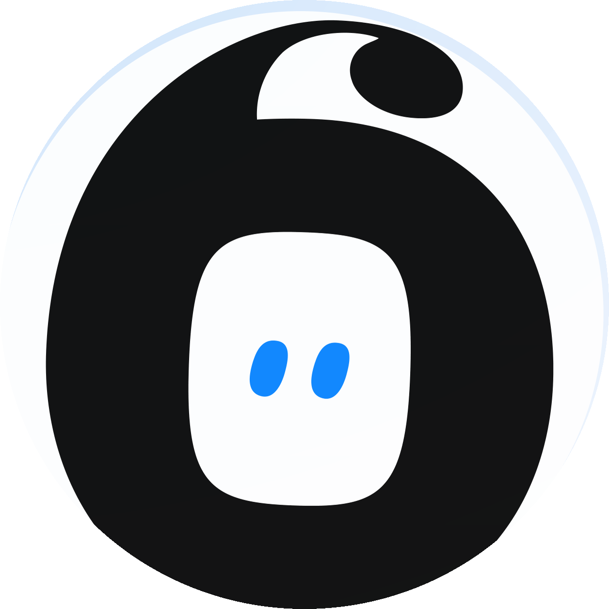

시연 화면 · 순서는 demo_sitemap/index.html 상단의 SYSTEMS · TOPICS · SCREENS 만 수정하면 전체에 반영됩니다.
호스트를 바꾸려면 SYSTEMS 의 base 값만 변경하면 해당 시스템 링크가 일괄 전환됩니다.
AX Labs · AX Datahub 시연 대상 화면 22건
※ 항목을 클릭하면 새 탭에서 열리고, 클릭한 항목은 선택 표시됩니다.

시연 화면 · 순서는 demo_sitemap/index.html 상단의 SYSTEMS · TOPICS · SCREENS 만 수정하면 전체에 반영됩니다.
호스트를 바꾸려면 SYSTEMS 의 base 값만 변경하면 해당 시스템 링크가 일괄 전환됩니다.